Abstract
Key Contributions
MAP confidence law
A derived MAP update for per-agent confidence whose Cantelli back-off solves a DRO chance constraint, with recursive feasibility, practical stability, and a performance sandwich versus fixed-δ CC-MPC.
Joint-optimization bias
Optimizing confidence inside the QP is optimistically biased when the constraint is active (Theorem 3). Estimate-then-plan with a trust-region patch restores the safety guarantee.
Optimal multi-agent split
A confidence-weighted allocation uniquely minimizes a generalized KL objective under a conserved scene risk budget, shifting conservatism toward the less reliable agent.
Closed-loop evidence
Three public-protocol urban scenes, literature tightening baselines, 100-trial Monte Carlo, and a Theorem 3 grid. Adaptive cuts mean back-off 41–48% at zero violations.
Methods
From prediction error to confidence
The one-step residual ek is normalized to yk ∈ [0,1]. Confidence ck is the minimizer of a three-term regularized objective (prior, data-fit, decay), which is MAP estimation and yields the closed form ck+1 = (1−β)ck + α yk.
Confidence codeFrom confidence to risk
Fixed δ is replaced by δ(c) = δmin + (δmax−δmin)(1−e−λc). Effective residual scale σeff(c) and Cantelli back-off ρ(c) then tighten the chance constraint only when the forecast is untrustworthy.
Risk codeEstimate-then-plan (no joint bias)
Deployed control sets ck = ĉk and never solves the naive joint program (Pnaive). Theorem 3 shows that jointly optimizing c with u overstates confidence when the constraint is active; a trust-region restores safety.
CC-MPC codeMulti-agent risk allocation
With a conserved δtotal, the split δ̃k(i) ∝ δ(ck(i)) uniquely minimizes a generalized KL objective and, by Boole, keeps the union violation probability ≤ δtotal.
Allocation codeClosed-Loop Experiments
Three urban scenes mapped to public catalogs (NHTSA/ISO 34502 cut-in, Euro NCAP obstructed AEB, CommonRoad intersection), plus a 100-trial Monte Carlo of Scenario A. Click a plot to enlarge.
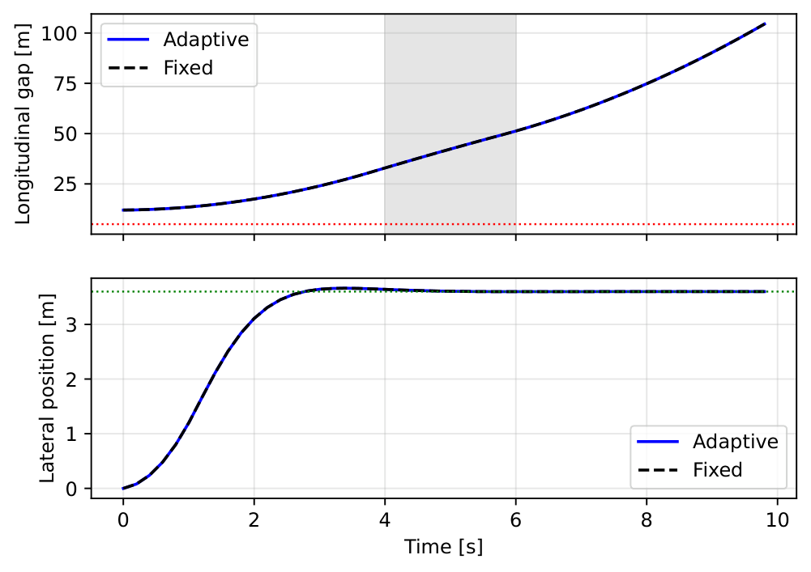
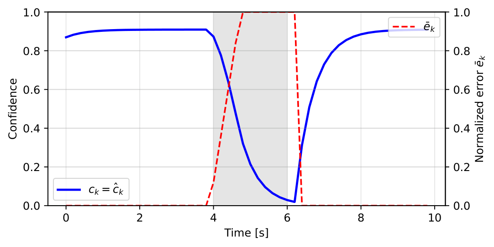
ck ∈ [0.49, 0.87] during unmodeled leader braking 22 → 15 m/s on t ∈ [4, 6] s.
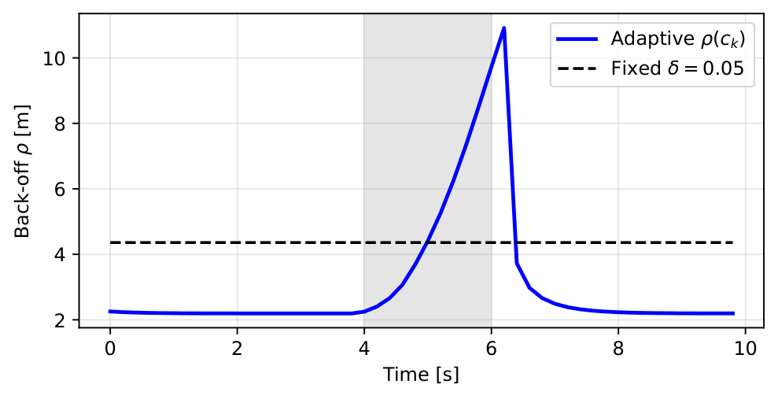
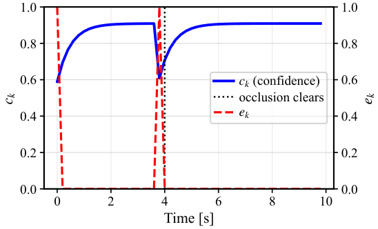
Reveal at t = 4 s with a 22 m gap. ck ∈ [0.50, 0.90] around occlusion clearing.
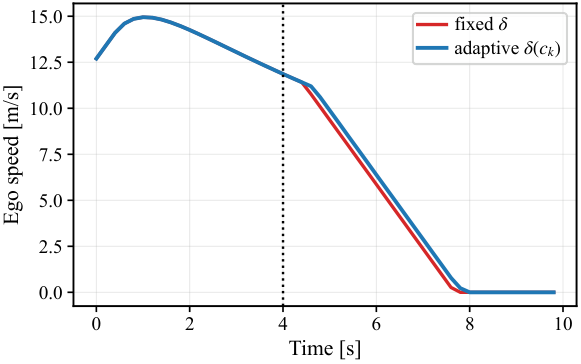
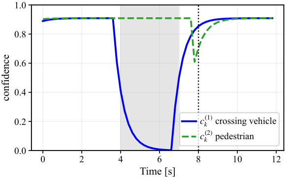
Crossing vehicle mismatch on t ∈ [4, 7] s; pedestrian reveal at t = 8 s. δtotal = 0.10.
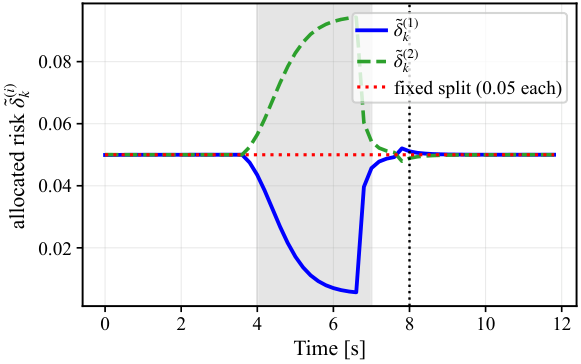
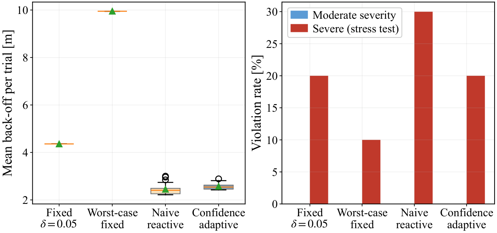
100 randomized trials of Scenario A. Moderate: 0% violations. Severe: same 20% rate as fixed δ at about half the margin.
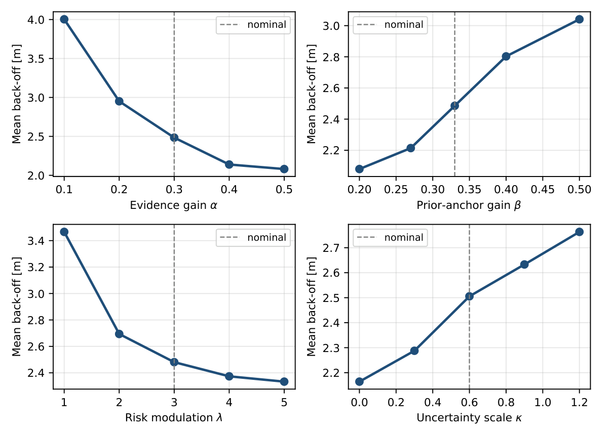
Result Plots
Headline comparisons from the CASPC experiments. Click any plot to enlarge. Lower mean back-off at a matched violation rate is better.
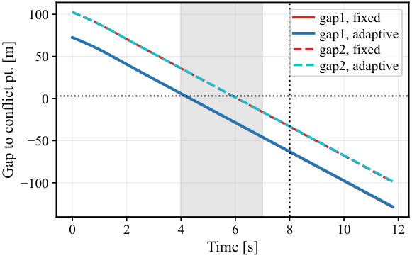
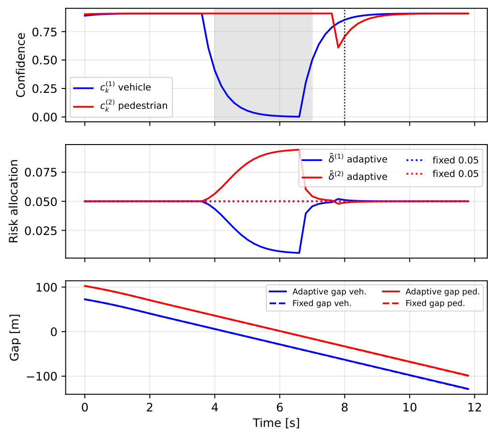
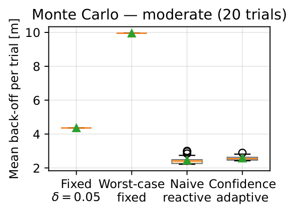
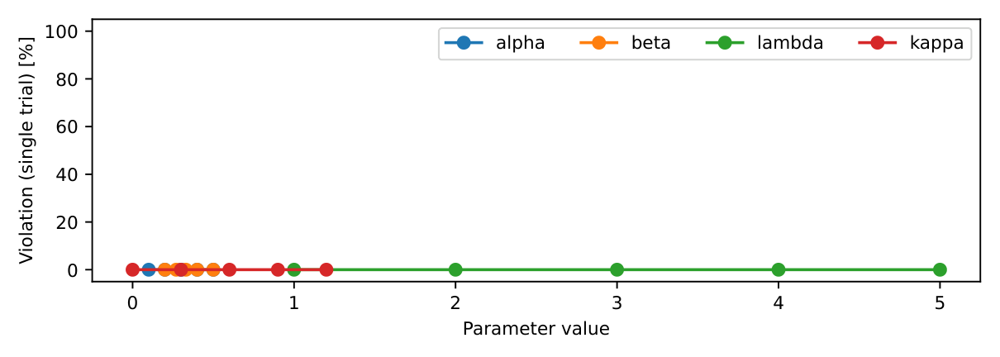
Quantitative Results and Benchmarking
Adaptive CC-MPC is the only method that adapts δ from a derived reliability estimate, so it is the only one that can go below the Cantelli floor of 4.36 m at the same zero-violation outcome.
Scenarios A–B (single closed-loop rollouts, 10 s)
Lower mean back-off at a matched violation rate is better. Adaptive keeps a still-safe minimum gap.
| Scenario | Controller | Min. gap [m] | Mean back-off [m] | Viol. |
|---|---|---|---|---|
| A: braking cut-in | Fixed δ = 0.05 | 8.03 | 4.36 | 0 |
| A: braking cut-in | Adaptive (ours) | 6.87 | 2.56 (−41%) | 0 |
| B: occluded pedestrian | Fixed δ = 0.05 | 7.20 | 4.36 | 0 |
| B: occluded pedestrian | Adaptive (ours) | 5.26 | 2.29 (−48%) | 0 |
Literature adaptive-tightening baselines (Scenario A)
Same plant, constant-velocity predictor, and Cantelli algebra; only (δ, σ) change.
| Method | (δ, σ) policy | Mean ρ [m] | vs. ours |
|---|---|---|---|
| Fixed δ = 0.05 | δ fixed, σ = σ0 | 4.36 | +70% |
| LPES (Ma et al., 2026) | δ fixed, σ = EWMA ≥ σ0 | 4.36 | +70% |
| GMM-SMPC (Engelaar et al., 2025) | δ fixed, σ = σeff(c) | 5.20 | +103% |
| Worst-case fixed | δ = δmin, σ = σ0 | 9.95 | +288% |
| Confidence-adaptive (ours) | δ(c), σeff(c) | 2.56 | — |
LPES cannot undercut the Cantelli floor of 4.36 m. GMM at the operating point c = 0.68 gives 5.20 m. Ours is the only method that adapts δ from a derived reliability estimate.
Scenario C allocation windows (δtotal = 0.10)
Per-agent back-off ρ(i) [m]. Adaptive reallocates a conserved risk budget; both controllers finish with zero violations.
| Window | Fixed ρ(1) | Fixed ρ(2) | Adaptive ρ̃(1) | Adaptive ρ̃(2) |
|---|---|---|---|---|
| Nominal (t < 4) | 4.66 | 4.64 | 4.67 | 4.64 |
| Agent 1 mismatch (4 ≤ t ≤ 7) | 6.37 | 4.64 | 7.94 | 4.02 |
| Agent 2 surprise (8 ≤ t ≤ 8.6) | 4.83 | 5.48 | 4.70 | 5.64 |
On the stressed agent the back-off rises by about 25%; on the well-predicted agent it falls by about 13%.
Monte Carlo (100 randomized trials of Scenario A)
| Method | Moderate back-off [m] | Moderate viol. | Severe back-off [m] | Severe viol. |
|---|---|---|---|---|
| Fixed δ = 0.05 | 4.36 ± 0.00 | 0% | 4.36 ± 0.00 | 20% |
| Worst-case fixed | 9.95 ± 0.00 | 0% | 9.95 ± 0.00 | 10% |
| Myopic reactive | 2.45 ± 0.24 | 0% | 2.57 ± 0.33 | 30% |
| Confidence-adaptive | 2.57 ± 0.14 | 0% | 2.62 ± 0.16 | 20% |
Moderate: 41.5% less mean back-off than fixed δ, 41% lower trial-to-trial variance than myopic-reactive, 0% violations. Severe: same 20% violation rate as fixed δ at about half the margin; myopic-reactive is 30%.
QP solver runtime (≈40,000 solves, OSQP, Ts = 200 ms)
| Method | Mean [ms] | Median [ms] | 95th [ms] | Max [ms] |
|---|---|---|---|---|
| Fixed δ = 0.05 | 3.8 | 3.8 | 4.2 | 38.4 |
| Worst-case fixed | 4.2 | 3.9 | 5.4 | 111.2 |
| Myopic reactive | 3.9 | 3.8 | 4.9 | 32.8 |
| Confidence-adaptive | 3.8 | 3.8 | 4.0 | 25.7 |
Confidence-update overhead is < 0.01 ms (closed-form scalar). Max 111.2 ms is an OSQP → SCS fallback.
Theorem 3 (endogenous confidence bias) at ĉ = 0.60
Grid of 2001 points on (Pnaive). Joint optimization overstates c and undercuts ρ when the constraint is active.
| μ | c★grid | Bias | ρ(ĉ) [m] | ρ(c★) [m] |
|---|---|---|---|---|
| 0.00 | 0.600 | +0.000 | 2.75 | 2.75 |
| 0.10 | 0.695 | +0.095 | 2.75 | 2.55 |
| 0.20 | 0.772 | +0.172 | 2.75 | 2.42 |
| 0.50 | 0.960 | +0.360 | 2.75 | 2.12 |
At μ = 0.20, bias +0.172 and ρ 2.75 → 2.42 m (−12%). Full grid and trust-region constants are on GitHub.
BibTeX
@misc{Singh2026CASPC,
author={Singh, Anand and Betz, Johannes and Piccinini, Mattia},
title={Confidence-Adaptive Chance-Constrained Model Predictive Control for Autonomous Driving},
year={2026},
note={manuscript}
}